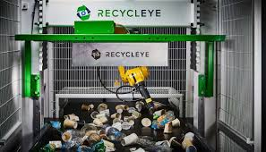
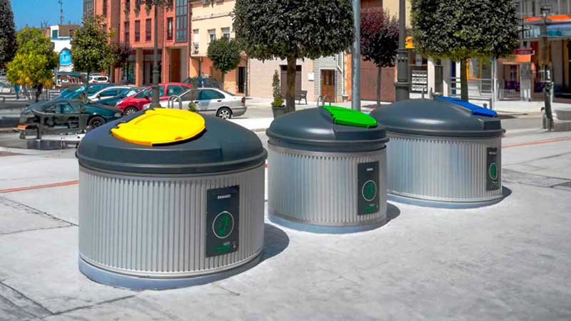
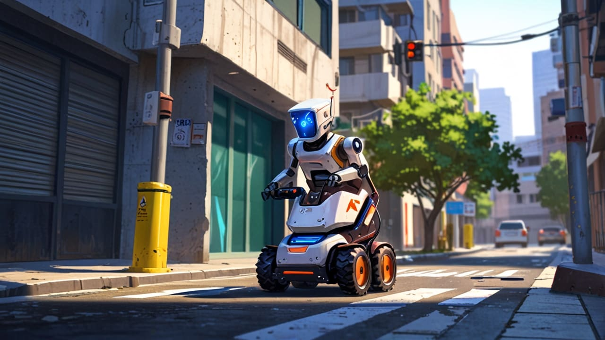
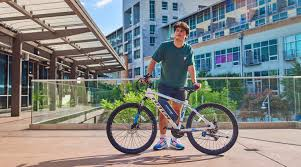
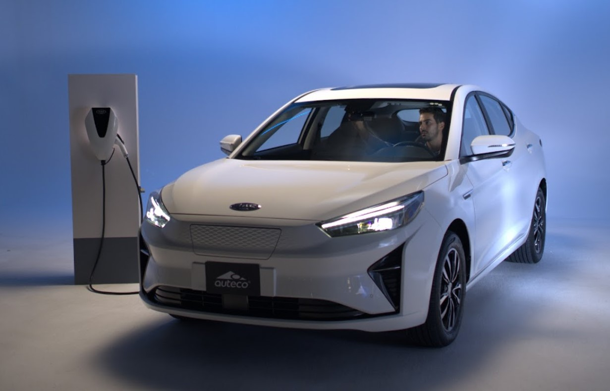
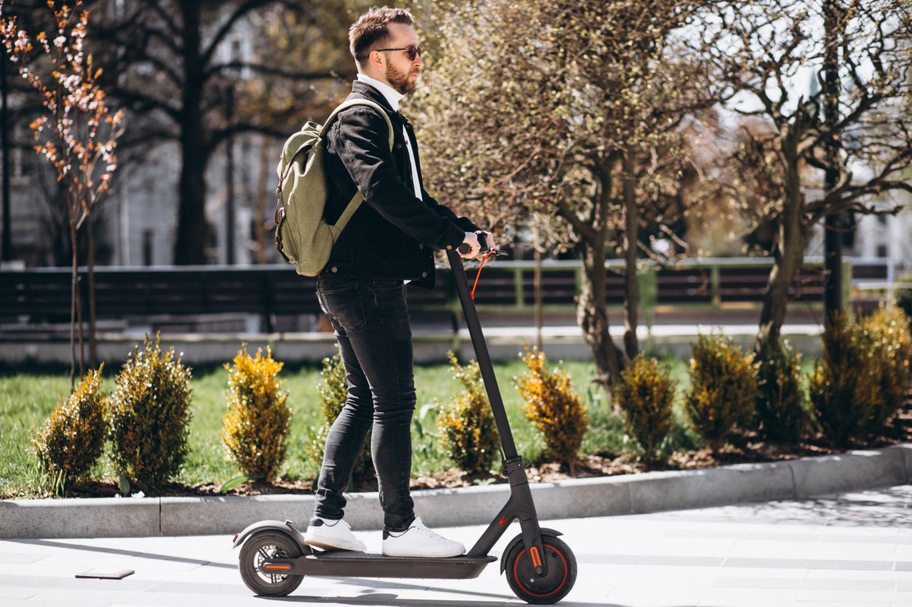

Tecnología Verde
En esta sección encontrarás artículos e investigaciones sobre las últimas tecnologías sostenibles, desde sistemas de energía renovable hasta innovaciones en transporte ecológico y reciclaje inteligente. Nuestro objetivo es mostrar cómo la ciencia y la innovación pueden ayudar a cuidar el medio ambiente.
|
Arve: 11 años liderando el paisajismo e infraestructura verde en el Perú Con más de una década de experiencia, Arve se consolida como la empresa líder en paisajismo e infraestructura verde en el país. A lo largo de 11 años, hemos sido pioneros en la implementación de jardines verticales, techos verdes y diseño bioclimático especializado para edificaciones en ciudades, contribuyendo a un entorno urbano más saludable y sostenible. |
| PROYECTO | DESCRIPCIÓN | HACER CLIC EN IMAGEN |
|---|---|---|
| Reciclaje con IA | Máquinas que separan residuos automáticamente usando inteligencia artificial. |  |
| Contenedores inteligentes | Recolectores que detectan el tipo de residuo y optimizan su clasificación. |  |
| Robot de limpieza | Robot autónomo que limpia y recolecta basura en espacios públicos. |  |
| VEHÍCULO | DESCRIPCIÓN | HACER CLIC EN IMAGEN |
|---|---|---|
| Bicicleta eléctrica | Medio de transporte ecológico y rápido para la ciudad. |  |
| Auto eléctrico | Vehículo que funciona con batería recargable y no produce emisiones. |  |
| Monopatín eléctrico | Alternativa de movilidad urbana rápida y sin contaminación. |  |